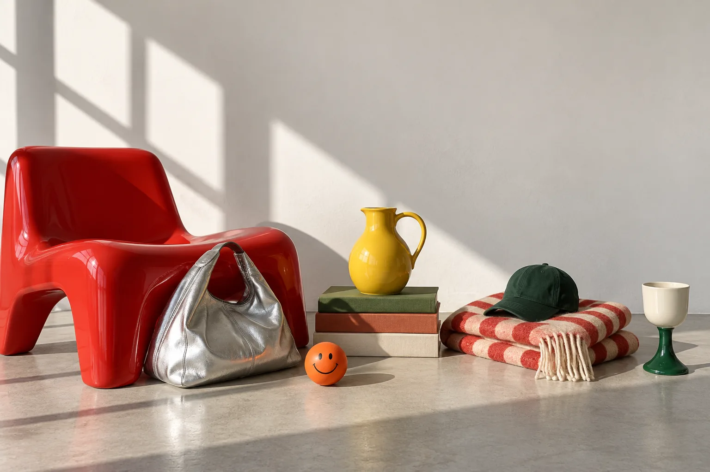
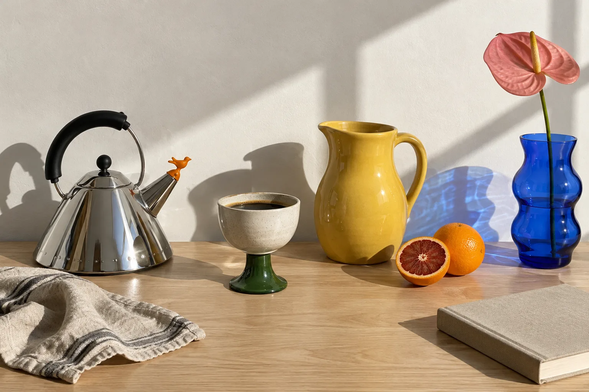
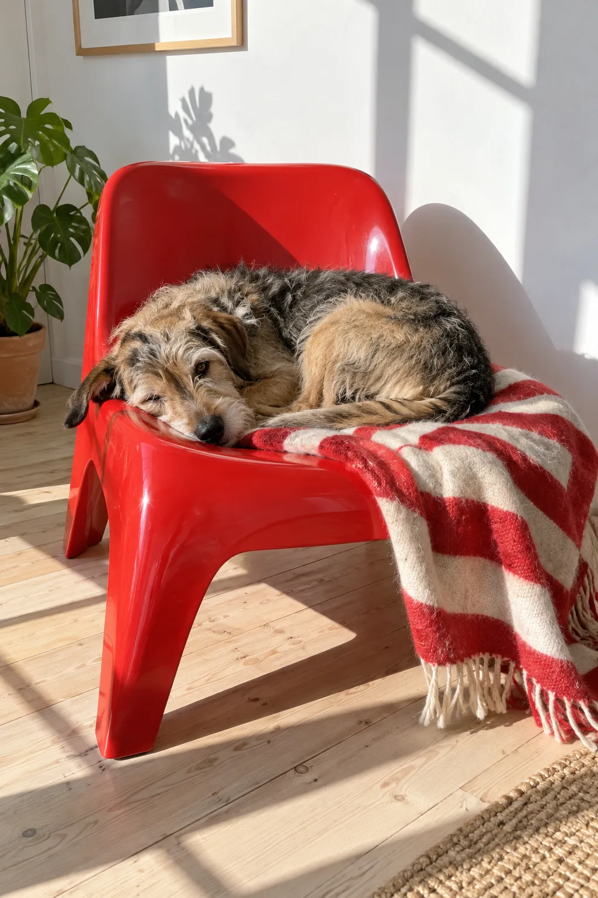
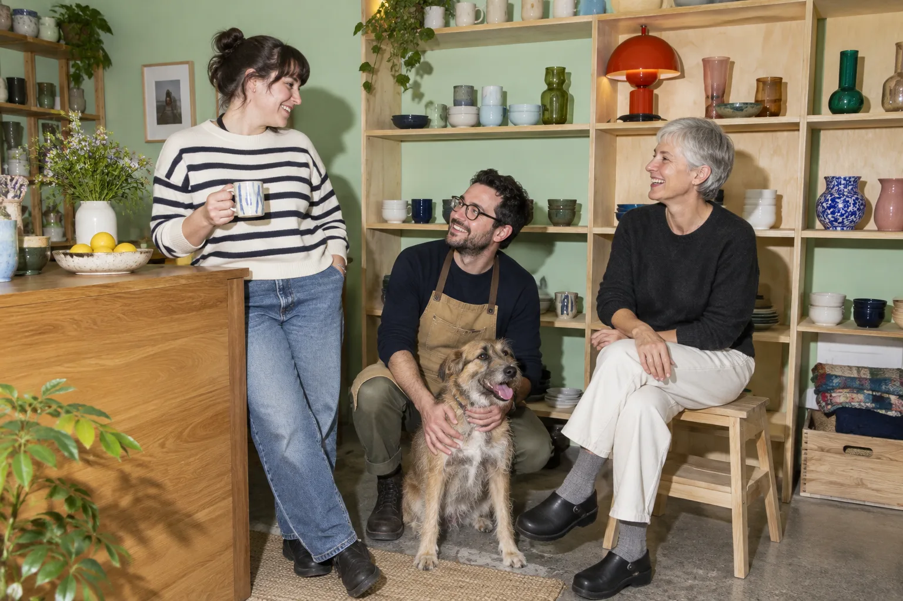
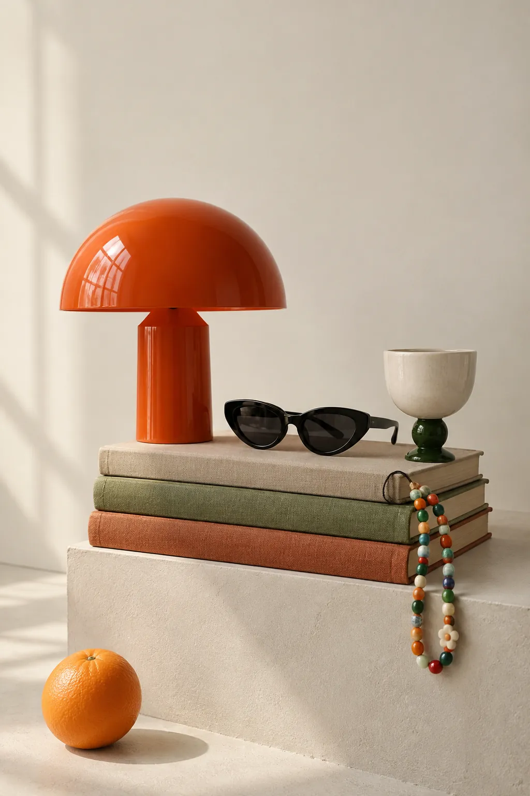
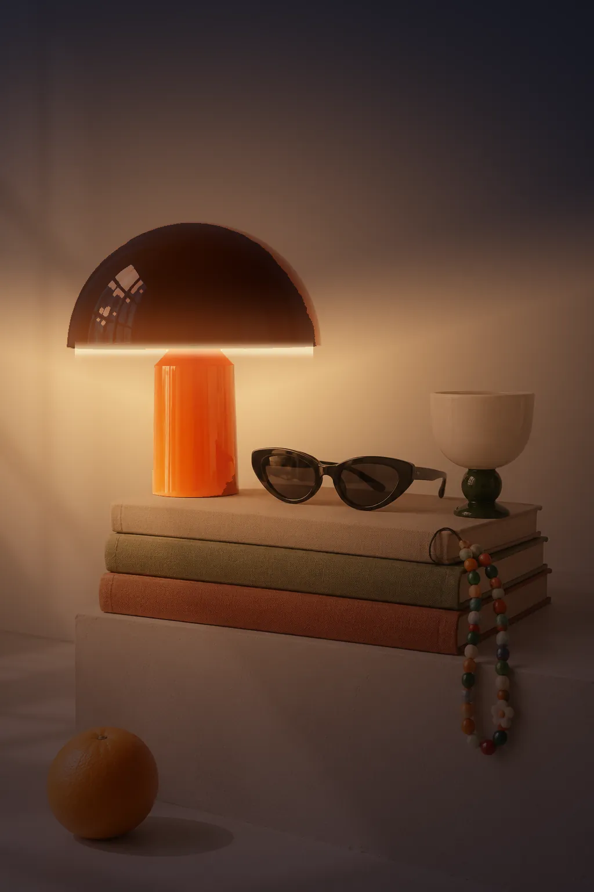

Ordinary things deserve an uncommon home.
Objects is a concept for an independent lifestyle shop: sculptural lamps, glossy ceramics, glass, bags and small furniture, each chosen for a bit of character.
Shops like this are built on taste. Online, most of them end up on the same template as everyone else. We wanted to design a store that feels as considered as the things it sells, without losing the basics of shopping.

01 — The Problem
Great objects, generic shops
Independent shops sell things with real personality: a lamp shaped like a mushroom, a kettle with a bird on the spout. On most templates, every one of them becomes a grey thumbnail in an identical grid.
The shop’s point of view, the reason to buy from them instead of a marketplace, gets lost. And shoppers get no sense of what an object is like to live with, which makes a premium price hard to justify.
A $185 lamp shouldn’t
look like a $15 phone case.
02 — The Idea
Playful objects, disciplined layouts
The line became the brief: “Ordinary things. Uncommon character.” The products are everyday — cups, bags, lamps — but each one has a quirk.
So the site does two jobs at once. It lets the objects be loud, and keeps everything around them calm: a strict grid, quiet type for shopping, and generous space.
The objects get to be loud because everything around them stays calm.
03 — The Visual System
The colour comes from the stock
A warm off-white base instead of clinical white, so the objects glow against it like they would on a gallery wall. The interface itself is black, off-white and one vermilion accent. The vermilion lamp, the cobalt vase and the yellow pitcher bring the rest.
Archivo, set condensed and heavy, gives the headlines a magazine-cover voice and lets products sit on the type. Instrument Sans keeps names, prices and details easy to scan, and IBM Plex Mono labels add a catalogue feel. A few small shapes — a flower, a smiley, an asterisk — add a wink without tipping into childish.
Warm White
#FAF9F6
Ink
#121110
Vermilion
#FF5A1F
Cobalt
#1F47D6
04 — Photography
The photography is the product
Anything you shop from is a studio cutout: the same light, angle and contact shadow on every object, so a lamp and a vase can be compared honestly and placed freely in layouts — like the lamp resting on the “t” of the hero headline.
Storytelling sections use real-life scenes instead, answering the question every shopper actually has: what will this look like at my place?

The first round of lifestyle photography looked too polished — soft golden light, blurry backgrounds, the same warm grade on everything. It read as staged. We reshot the direction in hard daylight, with everything in focus and honest colour, closer to real interiors photography. On a page about real people, trust matters more than prettiness.


05 — The Shopping Experience
A store that tells stories, and still sells
Every editorial moment is also a way to shop, so the story and the store are never separate places.
- Hover a product to see it in a real room — two jobs from one card.
- Colour swatches change the actual product image.
- Quick add, and a bag that slides in without leaving the page.
- A shoppable “Slow Mornings” edit with numbered hotspots.
- Search, category tiles and a full shop page with filters for people who already know what they want.


One small moment shows a product’s real purpose. Hover the brand-story photo on desktop and the room falls into night with the lamp switched on; on a phone, a handle at the edge of the frame drags the night in.
06 — Trade-offs
What we chose, and what it cost
Every decision that made the shop memorable had a price.
- Personality over weight: big type and large photography make it heavier than a template, so motion stays subtle and switches off for people who prefer less.
- An art-directed hero over a swappable banner: the lamp on the headline only works for that line, so each new campaign needs recomposing.
- Simulated colourways: one photo is recoloured for each option. Fast and consistent, but a real shop would eventually reshoot every colour.
- Stories over density: the homepage pushes some products further down, balanced by the shop page, categories and search.
- Mobile layouts designed separately, not shrunk: a stacked still life in the hero, a seamless campaign image, a drag slider instead of hover.
07 — The Outcome
A shop with a point of view
A complete, responsive store concept with a homepage, a shop of 24 products, an About page, search, product details, quick add and a working bag.
The system scales without redesign: when we added twelve new products, they dropped into the existing sections and nothing needed rethinking.
- 24Products across four categories
- 3Pages: home, shop and about
- 0Layouts changed to add twelve new products
Ordinary things.
Uncommon character.